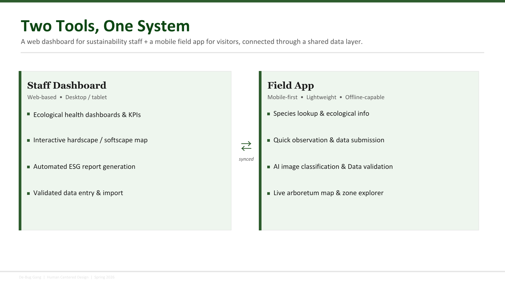
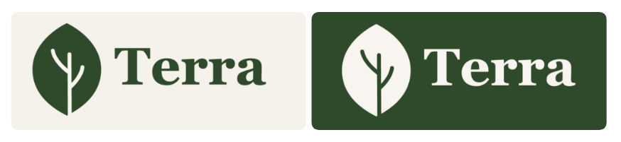
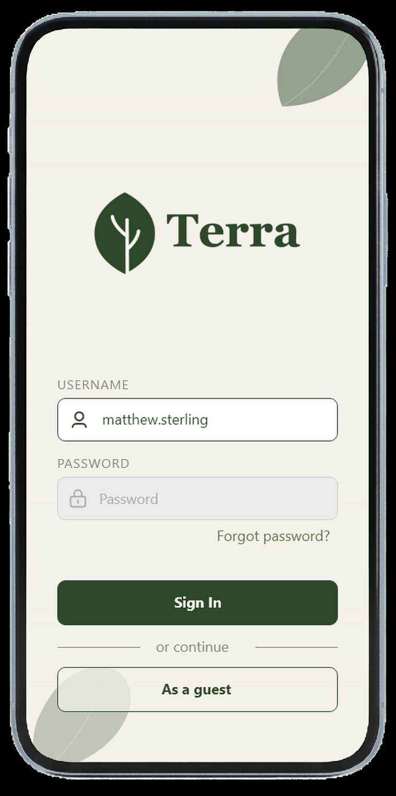
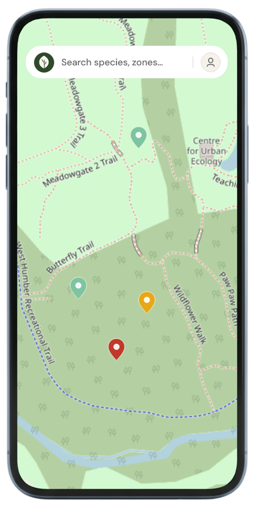
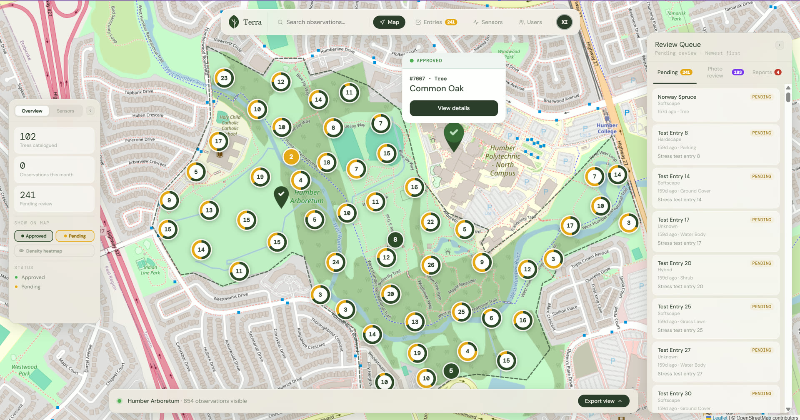
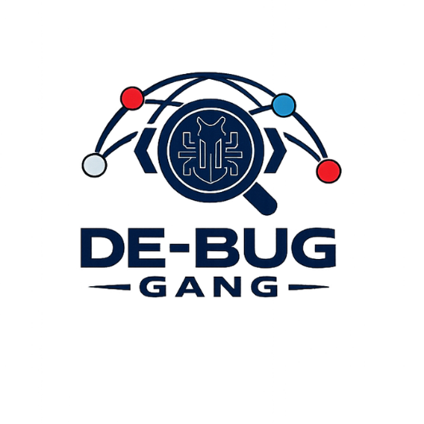

01 — Introduction
Four countries, one product
This project ran across four countries in a single semester, and each stop focused on a different subject. We started in Eindhoven with Human Centered Design, moved to Vienna for Software Engineering, then to Chania in Greece for IoT, and finished in Toronto with AI.
Our team came from five different countries, and we had to carry one product through all of it. Each module had its own teachers, expectations and skills, so we had to keep the project coherent while the focus kept changing.
02 — The problem
No central record of the landscape
The Humber Office of Sustainability had no central way to track the landscape of the Arboretum, while Humber College has committed to net zero by 2029.
Visitors, meanwhile, had little visibility into the trees and ecology around them.
03 — The solution
A field app paired with a staff dashboard
Terra is a mobile field app paired with a staff dashboard. Visitors log in, explore the arboretum map, view tree information and submit photo observations. Staff review those observations on a map alongside the existing landscape inventory and approve them into the permanent record. Each module added a layer:

04 — My role
Brand, UX/UI and front-end

- ForestPrimary
#2E4A2A - CreamBackground
#F5F1EB - MintAccent
#7DC5A0 - Near blackText
#1A1A1A - MutedSecondary text
#666666
Aa
Georgia Headings and wordmark · BoldAa
DM Sans Body text and interface · Regular, Medium- ApprovedVerified by staff
- PendingWaiting for review
- FlaggedNeeds attention




- Figma
- Next.js
- TypeScript
- Supabase
- Leaflet
- Docker
- GitHub
- Jira
- Claude Code
05 — Outcome
A working platform, built to be reused
We presented a working platform to the stakeholders. It is built to be reused for any green space, not only the Arboretum.
06 — What I learned
“I came in with a design background and learned how designs become working software. I also learned to speak up more in a team instead of letting documentation stand in for leadership.”
07 — The team

Debug Gang: five students from five countries, photographed in Vienna.